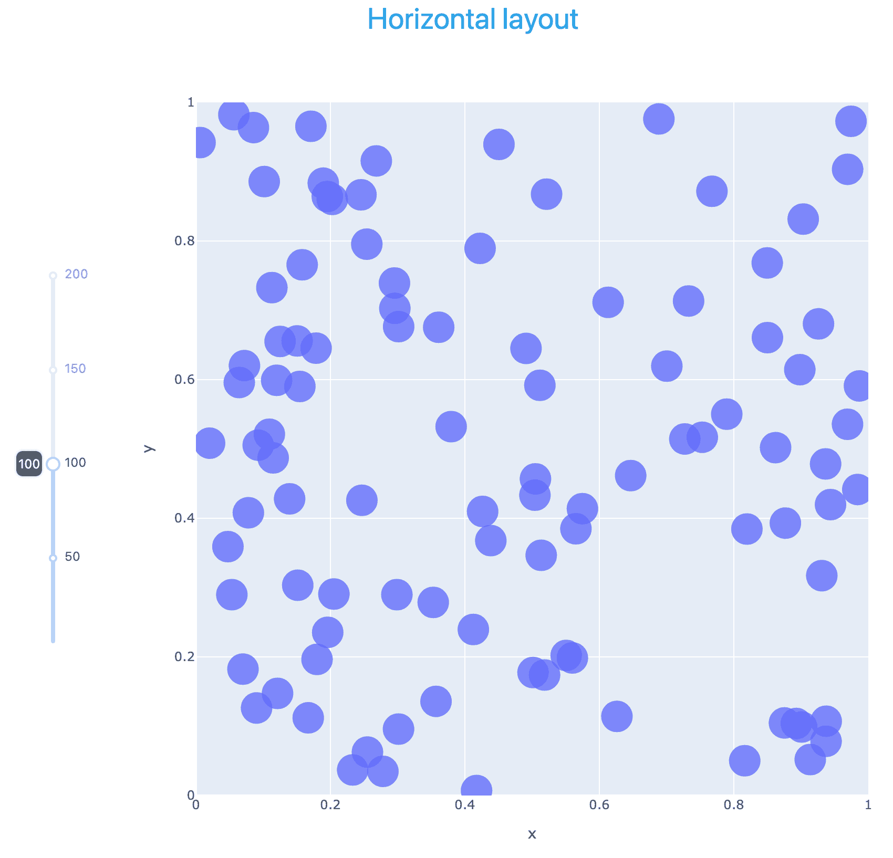
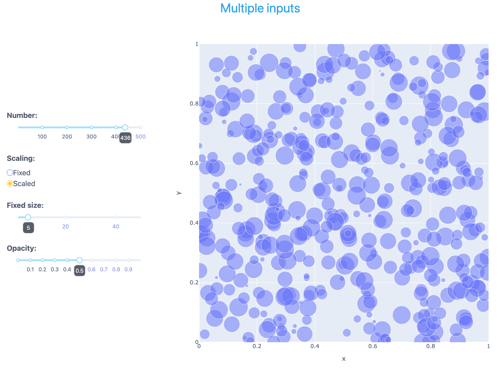
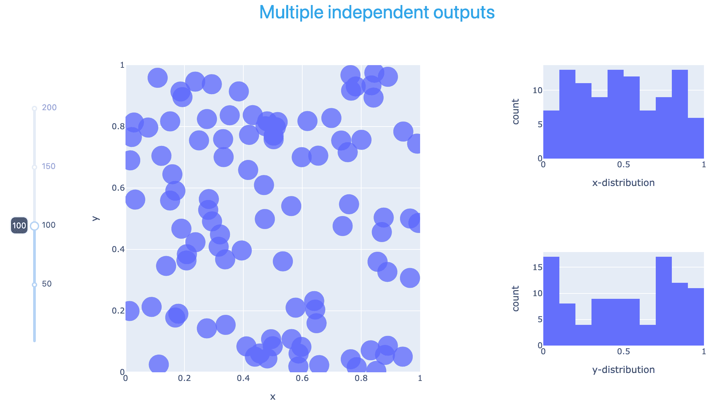
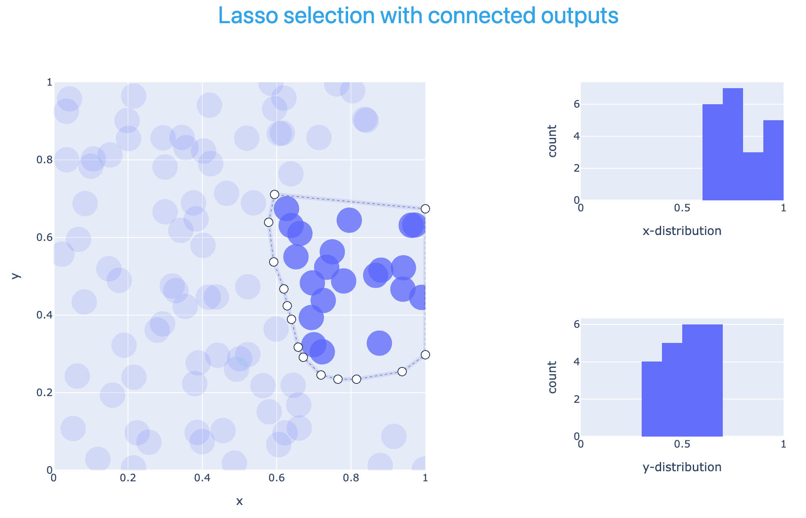

Interactive apps with Dash
Plotly Dash library (GitHub source) is a framework for making interactive data web applications.
- Dash Python User Guide https://dash.plotly.com
- https://dash.gallery/Portal has ~100 app examples
Some of its features:
- can mix and match multiple plots in a single web app
- multiple interactive controls: dropdowns and radio buttons (select one), checklists (select multiple), text/number input fields, sliders, etc.
- mouse selection in one plot can show in other plots,
- can create different tabs inside the app, with rules for switching between them,
- even can create an entire website with user guides, plots, code examples, etc.
To install the core Dash library, use your favourite installer, ideally inside a dedicated virtual environment, e.g.
$ pip install dash
$ uv pip install dash
$ conda install -c conda-forge dashWhile you can run Dash inside JupyterHub on the training cluster, I have not succeeded in making jupyter_mode="inline" work as intended, to display interactive Dash apps inside the remote Jupyter notebook. By default, Dash is starting a normal web server and JupyterHub (running on the same compute node) has no idea it exists. There are manual ways to connect the two, but then the browser will block this mixed content (a Jupyter notebook and an app from a separate server) for security reasons.
Long story short, I have not yet found a reliable and simple way to run Dash in a remote Jupyter notebook on the training cluster. Moreover, Dash library does not provide a way to kill the server – instead you do this by killing the underlying Python process, which will further complicate our setup.
For these reasons, I will demo it locally on my computer – which is probably how you should develop Dash apps in the first place.
Here is how I installed Dash on my computer, along with some dependencies:
uv pip install dash # main Dash library
uv pip install dash-ag-grid # to display tabular data components
uv pip install dash-bootstrap-components # community-maintained styling library
uv pip install dash-mantine-components # community-maintained styling libraryOur baseline plot without Dash
On my computer I already have a setup that opens every Plotly plot in a new browser tab, using the setup mentioned at the start of this workshop. As a reminder, if you need to redirect your plot, use one of these options:
import plotly.io as pio
pio.renderers.default = 'notebook'
pio.renderers.default = 'browser'Let’s create a simple scatter plot with Plotly Express:
import plotly.express as px
import numpy as np
npoints = 100
fig = px.scatter(x=np.random.rand(npoints), y=np.random.rand(npoints),
range_x=[0,1], range_y=[0,1])
fig.update_traces(marker=dict(size=30, opacity=0.8))
fig.show()Alternatively, we could create the same plot with Graph Objects:
import plotly.graph_objs as go
import numpy as np
npoints = 100
trace = go.Scatter(x=np.random.rand(npoints), y=np.random.rand(npoints),
mode='markers', marker=dict(size=[30]*npoints))
fig = go.Figure(data=[trace])
fig.update_layout(xaxis=dict(range=[0,1]), yaxis=dict(range=[0, 1]))
fig.show()Our baseline plot in Dash
To serve our Graph Objects plot inside Dash, we need to create a script scatter1.py:
# save this as scatter1.py
import plotly.graph_objs as go
import numpy as np
from dash import Dash, html, dcc
npoints = 100
trace = go.Scatter(x=np.random.rand(npoints), y=np.random.rand(npoints),
mode='markers', marker=dict(size=[30]*npoints))
fig = go.Figure(data=[trace])
fig.update_layout(xaxis=dict(range=[0,1]), yaxis=dict(range=[0, 1]), width=800, height=800)
app = Dash() # launch an instance of a Dash app
app.layout = [
html.Div(children='Dash scatter plot with Graph Objects'), # content container
dcc.Graph(figure=fig) # our plot container from Dash Core Components
]
app.run(debug=True) # run the instanceYou must run a Dash script by passing it to the Python interpreter:
python scatter1.pyBecause of how Dash is designed, running this script from a Python shell won’t work (nothing will happen if you try). One particularly nice feature of Dash – that would not be possible in a shell – is hot reloading: whenever you change the script file, Dash automatically re-executes it and refreshes the app.
In this code above html.Div is a wrapper for standard html5 block-level container (content division element). It takes a list of content elements (or a single element) and CSS utility classes for styling.
Alternatively, you can use Plotly Express functions with Dash:
# save this as scatter2.py
import plotly.express as px
import numpy as np
from dash import Dash, html, dcc, callback, Output, Input
npoints = 100
fig = px.scatter(x=np.random.rand(npoints), y=np.random.rand(npoints),
range_x=[0,1], range_y=[0,1], width=800, height=800)
fig.update_traces(marker=dict(size=30, opacity=0.8))
app = Dash()
app.layout = [
html.Div(children='Dash scatter plot with Plotly Express'),
dcc.Graph(figure=fig)
]
app.run(debug=True)A single running app can have multiple instances, i.e. multiple users can connect to the same app at the same time, each user with their own interactive view and state.
Make it interactive
Let’s add two new elements to our script:
- a slider, to select the number of points, and
- a callback function that takes
valueinput from the slider componentslider1and returnsfigureoutput to the graph componentg1
# save this as scatter3.py
import plotly.express as px
import numpy as np
from dash import Dash, html, dcc, callback, Output, Input
app = Dash()
app.layout = [
html.Div(children='Scatter plot with controls'), # HTML component
dcc.Slider(id='slider1', min=5, max=200, step=5, # slider conponent
value=100, # default starting value
marks={i: str(i) for i in range(0,201,50)},
tooltip={"placement": "bottom", "always_visible": True}
),
dcc.Graph(figure={}, id='g1') # graph component
]
@callback(
Output(component_id='g1', component_property='figure'),
Input(component_id='slider1', component_property='value')
)
def update_graph(selected):
print('running the callback function for', selected)
fig = px.scatter(x=np.random.rand(selected), y=np.random.rand(selected),
range_x=[0,1], range_y=[0,1], width=800, height=800)
fig.update_traces(marker=dict(size=30, opacity=0.8))
return fig
app.run(debug=True)In this script, we moved the figure-drawing code into the callback function, since it depends on the input number of points and must be re-executed each time we move slider.
Inside the callback function, the argument name selected is used only inside the function.
Add some style
At the moment, our application is very minimal in appearance. While we could style it using HTML and CSS, that approach assumes some familiarity with CSS. Dash provides higher-level components that make styling much easier. A popular option in industry, Dash Enterprise (requires a commercial license starting at 35k per year) provides Dash Design Kit, but it’s not an option for us.
Fortunately, the Dash community has developed two open-source libraries – Dash Bootstrap Components and Dash Mantine Components – that make styling Dash apps much easier. They are easy to install:
$ uv pip install dash-bootstrap-components
$ uv pip install dash_mantine_componentsToday, I’ll use Dash Bootstrap Components, though the two libraries offer similar functionality.
# save this as scatter4.py
import plotly.express as px
import numpy as np
from dash import Dash, html, dcc, callback, Output, Input
import dash_bootstrap_components as dbc
external_stylesheets = [dbc.themes.CERULEAN]
app = Dash(__name__, external_stylesheets=external_stylesheets)
app.layout = dbc.Container([
dbc.Row([html.Div('Horizontal layout',
className="text-primary text-center fs-3")]), # colour+centring+size
dbc.Row([
dbc.Col([
dcc.Slider(id='slider1', min=5, max=200, step=5,
value=100,
vertical=True,
marks={i: str(i) for i in range(0,201,50)},
tooltip={"placement": "left", "always_visible": True}
),
], width="auto", align="center", className="ms-4"), # ms-4 is a left margin of size 4
dbc.Col([
dcc.Graph(figure={}, id='g1')
], width="auto"),
], justify="center") # centre both columns in the row
], fluid=True) # use full screen width, min margin padding
@callback(
Output(component_id='g1', component_property='figure'),
Input(component_id='slider1', component_property='value')
)
def update_graph(selected):
print('running the callback function for', selected)
fig = px.scatter(x=np.random.rand(selected), y=np.random.rand(selected),
range_x=[0,1], range_y=[0,1], width=800, height=800)
fig.update_traces(marker=dict(size=30, opacity=0.8))
return fig
app.run(debug=True)
Multiple inputs
Now, let’s add more controls – two extra sliders and radio buttons (only one selection) – for the total of 4 inputs to the callback function. All interactive controls are sitting inside a single column, and are all packaged into their own html.Div with mb-4 margins for nicer visual separation:
# save this as scatter5.py
import plotly.express as px
import numpy as np
from dash import Dash, html, dcc, callback, Output, Input
import dash_bootstrap_components as dbc
external_stylesheets = [dbc.themes.CERULEAN]
app = Dash(__name__, external_stylesheets=external_stylesheets)
app.layout = dbc.Container([
dbc.Row([html.Div('Multiple inputs', className="text-primary text-center fs-3")]),
dbc.Row([
dbc.Col([
html.Div([
html.Label("Number:", className="fw-bold mb-2"),
dcc.Slider(id='slider1', min=1, max=500, step=5,
value=100, vertical=False,
marks={i: str(i) for i in range(0,501,100)},
tooltip={"placement": "bottom", "always_visible": True}
),
], className="mb-4"),
html.Div([
html.Label("Scaling:", className="fw-bold mb-2"),
dcc.RadioItems(['Fixed', 'Scaled'], 'Fixed', id='scaling'),
], className="mb-4"),
html.Div([
html.Label("Fixed size:", className="fw-bold mb-2"),
dcc.Slider(id='slider2', min=1, max=50, step=1,
value=5, vertical=False,
marks={i: str(i) for i in range(0,81,20)},
tooltip={"placement": "bottom", "always_visible": True}
),
], className="mb-4"),
html.Div([
html.Label("Opacity:", className="fw-bold mb-2"),
dcc.Slider(id='slider3', min=0, max=1, step=0.1,
value=0.8, vertical=False,
marks={i/10: str(i/10) for i in range(0,10,1)},
tooltip={"placement": "bottom", "always_visible": True}
),
], className="mb-4"),
], width=3, align="center", className="ms-4"),
dbc.Col([
dcc.Graph(figure={}, id='g1')
], width="auto"),
], justify="center") # centre all columns in the row
], fluid=True)
@callback(
Output(component_id='g1', component_property='figure'),
Input(component_id='slider1', component_property='value'),
Input(component_id='scaling', component_property='value'),
Input(component_id='slider2', component_property='value'),
Input(component_id='slider3', component_property='value')
)
def update_graph(npoints, scaling, pointSize, opacity):
print('running the callback function for', npoints, scaling, pointSize, opacity)
match scaling:
case "Fixed":
np.random.seed(5) # to generate the same sequence every time
fig = px.scatter(x=np.random.rand(npoints), y=np.random.rand(npoints),
range_x=[0,1], range_y=[0,1], width=800, height=800)
fig.update_traces(marker=dict(size=pointSize, opacity=opacity))
case "Scaled":
np.random.seed(5) # to generate the same sequence every time
fig = px.scatter(x=np.random.rand(npoints), y=np.random.rand(npoints),
range_x=[0,1], range_y=[0,1], width=800, height=800,
size=np.random.rand(npoints), size_max=30)
fig.update_traces(marker=dict(opacity=opacity))
return fig
app.run(debug=True)
Multiple independent outputs
Now we go back to a single, vertical slider for the number of points, and add two histogram plots showing the distribution of all points in the scatter plot along the x- and y-axis, respectively. The slider affects all three plots – and this is the only connection between the plots. For example, if you zoom in on an area in the scatter plot, the histogram plots will not change.
# save this as scatter6.py
import plotly.express as px
import numpy as np
from dash import Dash, html, dcc, callback, Output, Input
import dash_bootstrap_components as dbc
external_stylesheets = [dbc.themes.CERULEAN]
app = Dash(__name__, external_stylesheets=external_stylesheets)
app.layout = dbc.Container([
dbc.Row([html.Div('Multiple independent outputs', className="text-primary text-center fs-3")]),
dbc.Row([
dbc.Col([
dcc.Slider(id='slider1', min=1, max=200, step=5,
value=100,
vertical=True,
marks={i: str(i) for i in range(0,201,50)},
tooltip={"placement": "left", "always_visible": True}
),
], width="auto", align="center", className="ms-4"), # ms-4 is a left margin of size 4
dbc.Col([
dcc.Graph(figure={}, id='g1')
], width="auto"),
dbc.Col([
dcc.Graph(figure={}, id='g2'),
dcc.Graph(figure={}, id='g3')
], width="auto"),
], justify="center"), # centre both columns in the row
], fluid=True)
@callback(
Output(component_id='g1', component_property='figure'),
Output(component_id='g2', component_property='figure'),
Output(component_id='g3', component_property='figure'),
Input(component_id='slider1', component_property='value')
)
def update_graph(selected):
print('running the callback function for', selected)
xpos = np.random.rand(selected)
ypos = np.random.rand(selected)
fig1 = px.scatter(x=xpos, y=ypos, range_x=[0,1], range_y=[0,1], width=600, height=600)
fig1.update_traces(marker=dict(size=30, opacity=0.8))
fig2 = px.histogram(x=xpos, nbins=10, width=400, height=280)
fig2.update_traces(xbins=dict(start=0, end=1, size=0.1)) # fixed number of bins
fig2.update_xaxes(title_text='x-distribution', range=[0, 1]) # fixed x-limits
fig3 = px.histogram(x=ypos, nbins=10, width=400, height=280)
fig3.update_traces(xbins=dict(start=0, end=1, size=0.1)) # fixed number of bins
fig3.update_xaxes(title_text='y-distribution', range=[0, 1]) # fixed x-limits
return fig1, fig2, fig3
app.run(debug=True)
Connected plots
Let’s remove the slider, and add a Lasso selection in the scatter plot and show the x- and y-histograms only for the points selected with Lasso. If there is no selection, add a text “Select points to see details” to the histograms.
The callback function has:
- two outputs (two histogram plots)
- one input: special input
selectedDatafrom the graph componentg1– we call this argumentselectedPointsinside the callback function
# save this as scatter7.py
import plotly.express as px
import numpy as np
from dash import Dash, html, dcc, callback, Output, Input
import dash_bootstrap_components as dbc
external_stylesheets = [dbc.themes.CERULEAN]
app = Dash(__name__, external_stylesheets=external_stylesheets)
npoints = 100
xpos = np.random.rand(npoints)
ypos = np.random.rand(npoints)
fig1 = px.scatter(x=xpos, y=ypos, range_x=[0,1], range_y=[0,1], width=600, height=600)
fig1.update_traces(marker=dict(size=30, opacity=0.8))
fig1.update_layout(dragmode='lasso')
app.layout = dbc.Container([
dbc.Row([html.Div('Lasso selection with connected outputs', className="text-primary text-center fs-3")]),
dbc.Row([
dbc.Col([
dcc.Graph(figure=fig1, id='g1')
], width="auto"),
dbc.Col([
dcc.Graph(figure={}, id='g2'),
dcc.Graph(figure={}, id='g3'),
], width="auto"),
], justify="center"), # centre both columns in the row
], fluid=True)
@callback(
Output(component_id='g2', component_property='figure'),
Output(component_id='g3', component_property='figure'),
Input('g1', 'selectedData')
)
def update_graph(selectedPoints):
print('running the callback function for', selectedPoints)
if selectedPoints is None:
xsel, ysel = [], []
xtitle = "Select points to see details"
ytitle = xtitle
else:
xsel = [p['x'] for p in selectedPoints['points']] # x of selected points
ysel = [p['y'] for p in selectedPoints['points']] # y of selected points
xtitle, ytitle = "x-distribution", "y-distribution"
fig2 = px.histogram(x=xsel, nbins=10, width=400, height=280)
fig2.update_traces(xbins=dict(start=0, end=1, size=0.1)) # fixed number of bins
fig2.update_xaxes(title_text=xtitle, range=[0, 1]) # fixed x-limits
fig3 = px.histogram(x=ysel, nbins=10, width=400, height=280)
fig3.update_traces(xbins=dict(start=0, end=1, size=0.1)) # fixed number of bins
fig3.update_xaxes(title_text=ytitle, range=[0, 1]) # fixed x-limits
return fig2, fig3
app.run(debug=True)
Other controls
The Dash Core Components (dcc) library offers the following interactive controls:
| Method | Description |
|---|---|
| dcc.Dropdown | select one item |
| dcc.RadioItems | select one item |
| dcc.Checklist | select multiple items |
| dcc.DatePickerRange | calendar to select start / end dates |
| dcc.DatePickerSingle | calendar to select a single date |
| dcc.Slider | slider with one handle |
| dcc.RangeSlider | slider with two handles, to specify a range |
| dcc.Input | text/number input field |
| dcc.Textarea | multi-line text input box |
| dcc.Upload | drag-and-drop area for uploading files |
| dcc.Tabs | switch between different dashboard tabs |
Publishing / hosting
A Dash app requires a server – you can’t just save its output to a standalone html5 file. If you want to share your Dash app with the world, you have several options:
- spin up a Dash app on your own VM – you can build one for free on one of our Clouds systems, or pay to use a commercial cloud,
- run a Dash app on your research group’s existing web server on an unused port,
- use Plotly Cloud: its free tier allows one running app at a time, or
- use Dash Enterprise paid options which is very expensive, so probably not a real option for us.
There are two ways you can work with Plotly Cloud: from your running app or via their portal. For the former you’ll need to install Plotly Cloud extension with uv pip install "dash[cloud]" (exact command depends on your Python setup) and then start the app with app.run(debug=True) and use the dev tools UI in the lower right corner. To replace your currently running app (there is a limit of 1) you need to open the app settings, or click Open Settings in Plotly Cloud | General | Delete Dash app, and only then you can publish a new app.
I personally find it easiest to use their web UI and drag and drop my Dash *.py script files. Also note that – when publishing to Plotly Cloud – it appears it won’t run the community styling libraries: I tried Dash Bootstrap Components and saw no formatting.